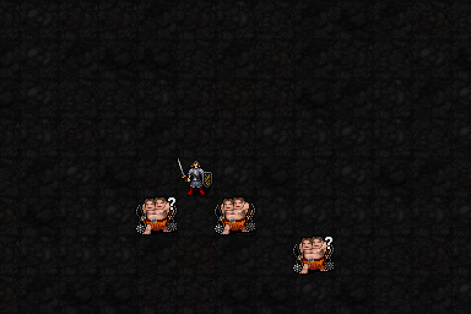

움직일 때 도착 지점 주변1칸의 적을 공격하는 리듬 상태입니다.
해금: 신앙★★★★★120 · 최소 기도술 제한 없음
비용: MP6·신앙12·행동1턴
시전 완료 후6+0.2I턴 → I12에서8.4턴 유지
종료 후 재사용 대기15턴

기존5성 시전 고리와 유지 표시를 최신 게임에서 캡처했습니다. 큰 파랑·보라 고리는 발동 이펙트, 주변1칸 바닥 문양은 이동 공격 상태의 범위 표시입니다. 실제 대기 시간은 GIF에서 줄였습니다.
| 항목 | 적용 내용 |
|---|---|
| 발동 조건 | 자발적으로 이동한 뒤 도착 지점 주변1칸의 적마다1회 피해 |
| 피해 | 2d(4+⌊I/3⌋) I12에서2d8 → 2~16 · 평균9, AC 적용 전 |
| 명중 | 별도 명중 판정 없이 피해 처리, 적의 AC로 감소 |
| 범위 | 본인 주변1칸(3×3 중 주변8칸). 인접 적 여러 마리 공격 가능 |
| 이동 속도 | 평소 이동 행동 비용 유지. 추가 MP·신앙 소모 없음 |
| 대기·제자리 근접 공격 | 5성 주변 피해가 자동으로 들어가지는 않음 |
| 1성 박자 | 조건에 맞는 이동이면 함께 축적. 최대3박자 유지 |
| 3성 파고들기와 연계 | 별도 MP3·신앙3을 내고3성을 쓰면, 도착 뒤 주변1칸에 같은5성 피해를 추가1회 적용 |
강제 이동·혼란·행동 불가 상태에서 이 이동 공격은 발동하지 않습니다. 5성이 무기 일반 공격을 자동 반복하는 것은 아닙니다.
가까운 적A/B와 범위 밖 적을 배치했습니다. 한 턴 대기에는 피해가 없고, 범위 밖 적은 네 번 이동 모두 피해0인 것을 검증했습니다. 아래 수치는 고정 피해가 아닌 이번 시연의 실제 결과입니다.
| 이동 | 적A 피해 | 적B 피해 |
|---|---|---|
| 1 | 8 | 0 |
| 2 | 10 | 11 |
| 3 | 0 | 0 |
| 4 | 10 | 7 |
현재5성 검토 중. 1·3성 승인, 이번 전환에서 전투 수치·도트는 변경하지 않았습니다.